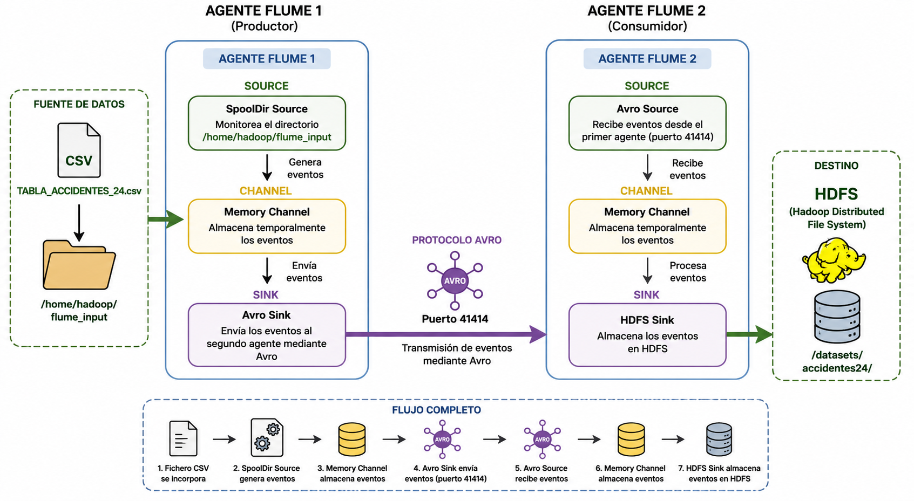

Ejercicio resuelto 3: Ingesta de datos mediante Apache Flume utilizando Avro
En este ejercicio se propone implementar un flujo de ingesta de datos donde Apache Flume maneja el formato Avro para serializar los eventos mientras estos son transferidos desde el ecosistema hacia Hadoop.
La finalidad es que el estudiante comprenda cómo Avro permite representar los datos de manera eficiente y compacta, minimizando el tamaño de la información que fluye entre los diferentes elementos de los sistemas.
Para ello, se establece una arquitectura formada por dos agentes Apache Flume conectados mediante el protocolo Avro. El primer agente se encarga de recoger los datos desde el sistema de archivos local, mientras que el segundo agente recibe los eventos y los almacena finalmente en HDFS.
Objetivo del ejercicio
El objetivo consiste en que el estudiante pueda observar de forma práctica cómo Apache Flume utiliza Avro para transmitir eventos entre diferentes agentes antes de que estos sean almacenados en HDFS.
- Configurar un agente Flume para detectar nuevos ficheros.
- Utilizar una Source de tipo spooldir.
- Almacenar temporalmente los eventos en un Channel de tipo memory.
- Utilizar un Sink de tipo Avro.
- Transmitir los eventos entre dos agentes Flume mediante el puerto 41414.
- Recibir los eventos mediante una Source de tipo Avro.
- Almacenar finalmente la información en HDFS.
Arquitectura de la solución
La solución propuesta está formada por dos agentes Apache Flume conectados mediante el protocolo Avro. El flujo de información puede resumirse de la siguiente forma:
De esta manera, los eventos generados por el primer agente son transmitidos mediante Avro al segundo agente, que se encarga de almacenarlos posteriormente en el sistema de archivos distribuido Hadoop.
1. Primer agente Flume: captura de los datos
El primer agente tiene como finalidad detectar la aparición del fichero TABLA_ACCIDENTES_24.csv en el directorio local utilizado para la ingesta.
Para ello se emplea una Source de tipo spooldir, que monitoriza el directorio:
Cuando el fichero se incorpora al directorio, la Source procesa su contenido y lo transforma en eventos Flume.
2. Source de tipo Spooldir
La Source constituye el punto de entrada de los datos al primer agente Flume. Su configuración permite detectar automáticamente nuevos ficheros incorporados al directorio de entrada.
agent.sources.src1.spoolDir = /home/hadoop/flume_input
El fichero TABLA_ACCIDENTES_24.csv es procesado por la Source y convertido en eventos que posteriormente serán enviados al Channel.
3. Channel del primer agente
Los eventos generados por la Source son almacenados temporalmente en un Channel de tipo memory.
El Channel actúa como elemento intermedio entre la Source y el Sink, permitiendo almacenar temporalmente los eventos antes de ser transmitidos al segundo agente.
4. Sink Avro del primer agente
Una vez almacenados los eventos en el Channel, el Sink de tipo Avro se encarga de transmitirlos al segundo agente Flume.
agent.sinks.sink1.hostname = <host-del-segundo-agente>
agent.sinks.sink1.port = 41414
El uso del protocolo Avro permite establecer la comunicación entre ambos agentes y transportar los eventos generados durante el proceso de ingesta.
41414
El primer agente utiliza este puerto para enviar los eventos al segundo agente Flume.
5. Segundo agente Flume: recepción de los eventos
El segundo agente se encarga de recibir los eventos enviados por el primer agente mediante el protocolo Avro.
Para ello dispone de una Source de tipo Avro, configurada para permanecer a la espera de los mensajes entrantes procedentes del primer agente.
↓
Channel memory
↓
Sink HDFS
6. Source Avro del segundo agente
La Source Avro del segundo agente permanece a la escucha de los eventos enviados por el primer agente a través del puerto 41414.
agent.sources.src2.bind = 0.0.0.0
agent.sources.src2.port = 41414
Una vez recibidos, los eventos son enviados al Channel configurado en este segundo agente para continuar el proceso de ingesta.
7. Channel del segundo agente
Los eventos recibidos mediante la Source Avro son almacenados temporalmente en un segundo Channel de tipo memory.
Este segundo canal permite desacoplar la recepción de los eventos de la operación final de escritura en HDFS.
8. Sink HDFS
Finalmente, el segundo agente dispone de un Sink de tipo HDFS, cuya función es almacenar los eventos recibidos en el sistema de archivos distribuido de Hadoop.
agent.sinks.sink2.hdfs.path = hdfs://namenode:9000/datasets/accidentes24/
De esta manera, los datos recorren todo el flujo definido entre los dos agentes hasta alcanzar su destino final en HDFS.
9. Funcionamiento completo del flujo de ingesta
El funcionamiento de la solución puede resumirse mediante las siguientes etapas:
TABLA_ACCIDENTES_24.csv en:

Figura 42. Flujo de ingesta de datos mediante dos agentes Apache Flume conectados mediante el protocolo Avro. Fuente: elaboración propia.
Ventajas del uso de Avro en la ingesta
La utilización de Avro en este flujo permite representar los eventos mediante un formato binario y compacto durante su transmisión entre los agentes Flume.
- Reduce el tamaño de la información transmitida.
- Permite transportar los eventos entre diferentes agentes Flume.
- Facilita la comunicación entre procesos distribuidos.
- Mantiene la información preparada para su posterior almacenamiento y procesamiento.
Resultado del ejercicio
Como resultado se establece una cadena de ingesta formada por dos agentes Apache Flume. El primer agente recoge el fichero TABLA_ACCIDENTES_24.csv, genera los eventos y los transmite mediante Avro al segundo agente.
El segundo agente recibe los eventos, los almacena temporalmente y finalmente los transfiere mediante un Sink HDFS al sistema de archivos distribuido de Hadoop. De esta forma, el estudiante puede observar de manera práctica la utilización de Avro como mecanismo de comunicación entre agentes dentro de una arquitectura Big Data.
Conclusión
El ejercicio permite introducir un escenario de ingesta compuesto por varios agentes Apache Flume conectados mediante Avro. Esta configuración muestra cómo los datos pueden recorrer diferentes etapas antes de alcanzar el almacenamiento distribuido en HDFS.
De este modo, el estudiante puede comprender de forma práctica la relación existente entre Source, Channel y Sink, así como el papel desempeñado por Avro en la transmisión de eventos entre los diferentes elementos de la arquitectura.